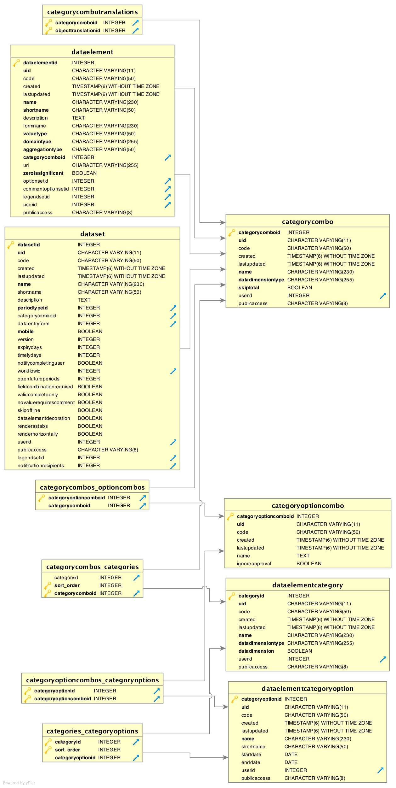
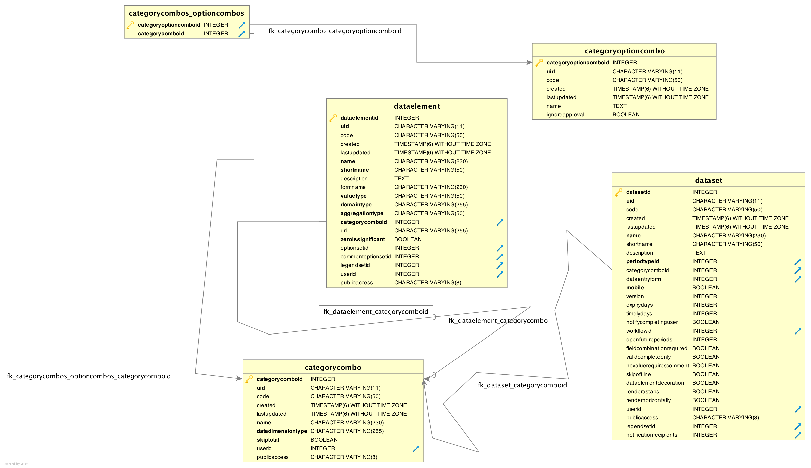

DHIS2 Datamodel
DHIS Version: 2.24
Search the web and you almost meet nothing like a link to the DHIS2 datamodel
Well, i thought of having some extracts from it; here are forexample some tables;
categoryoptioncombos_categoryoptions
dataelement
categorycombotranslations
categorycombos_optioncombos
categorycombos_categories
categories_categoryoptions
categorycombo
dataset
dataelementcategoryoption
dataelementcategory
categoryoptioncombo

dataelement
categorycombo
dataset
categorycombos_optioncombos
categoryoptioncombo
dhis-dataModel2.20.pdf
